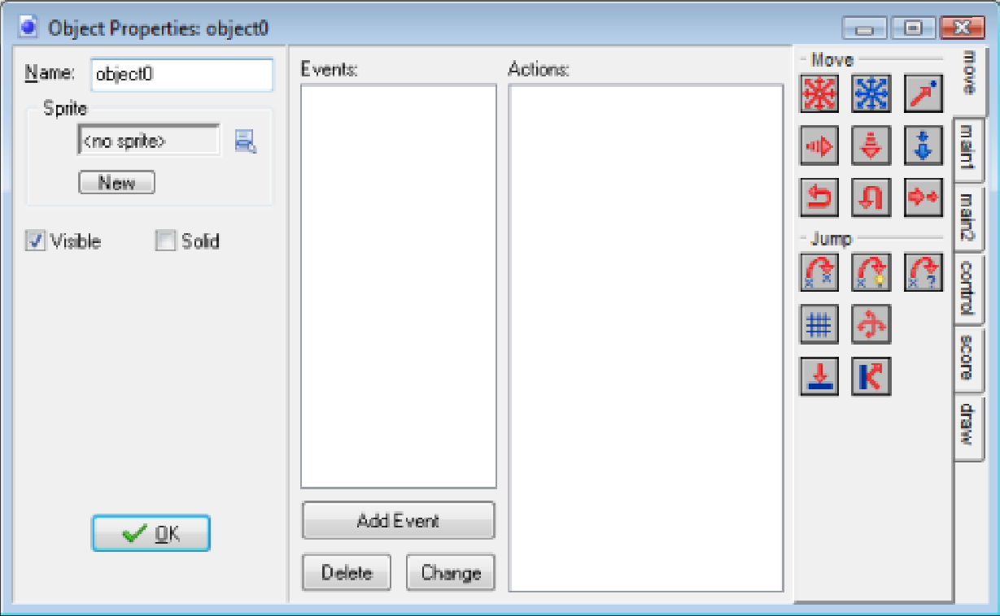
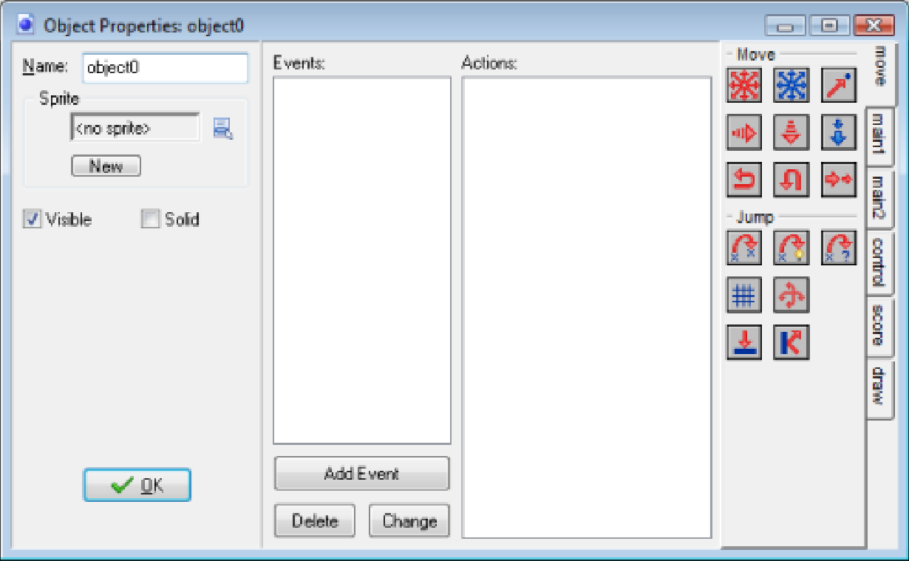
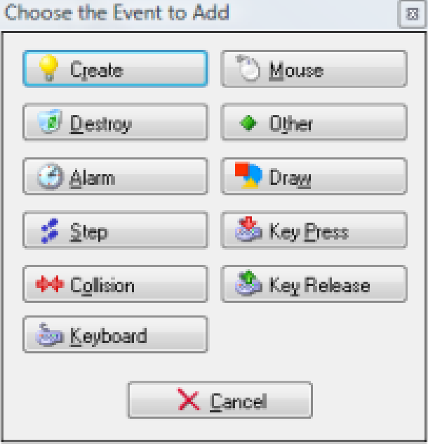
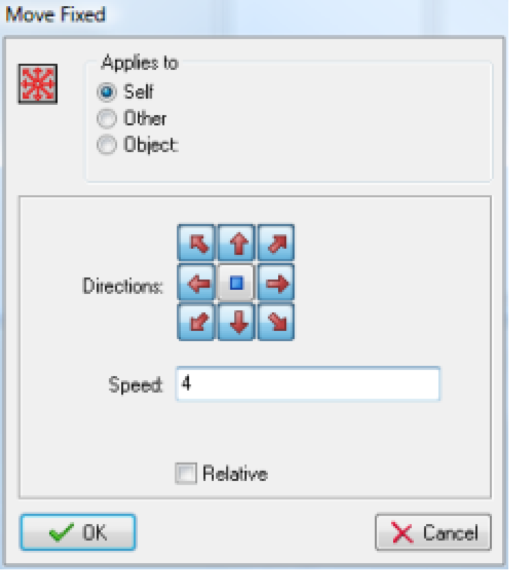
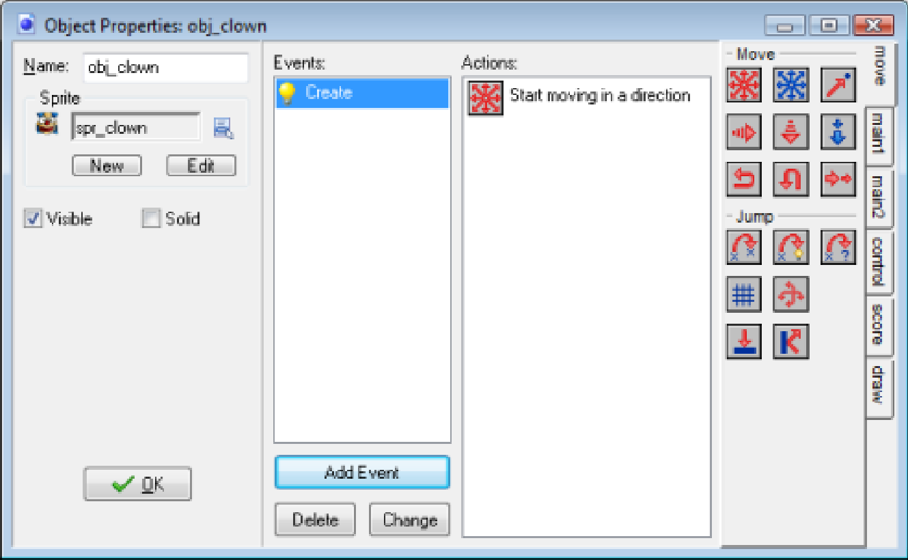
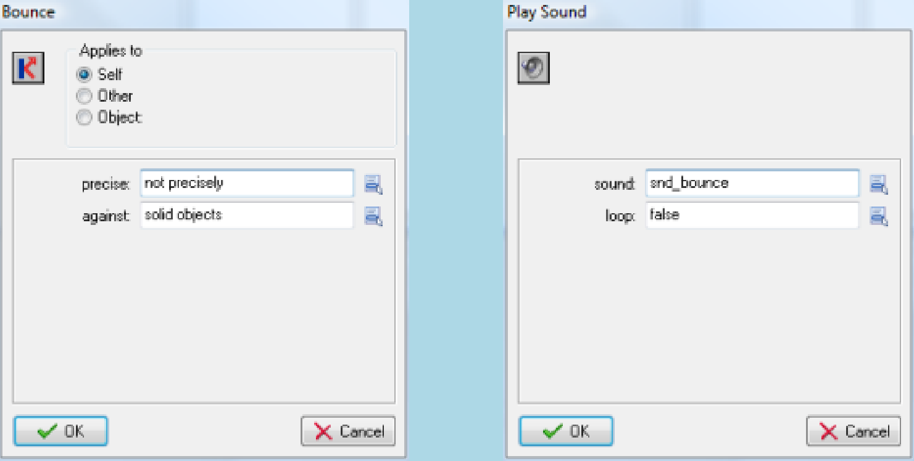
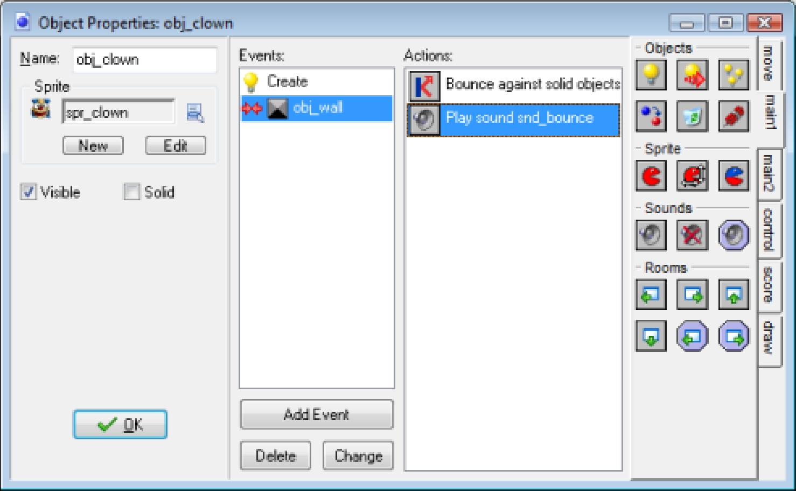
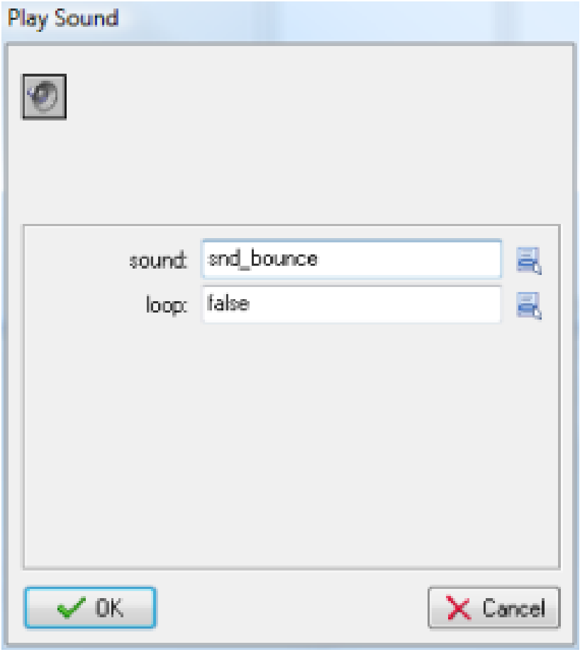
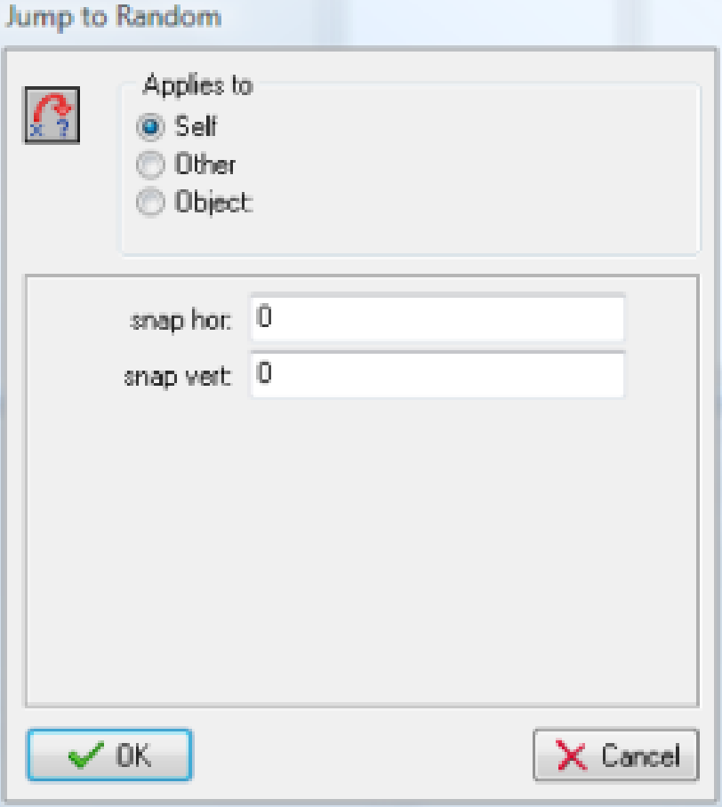
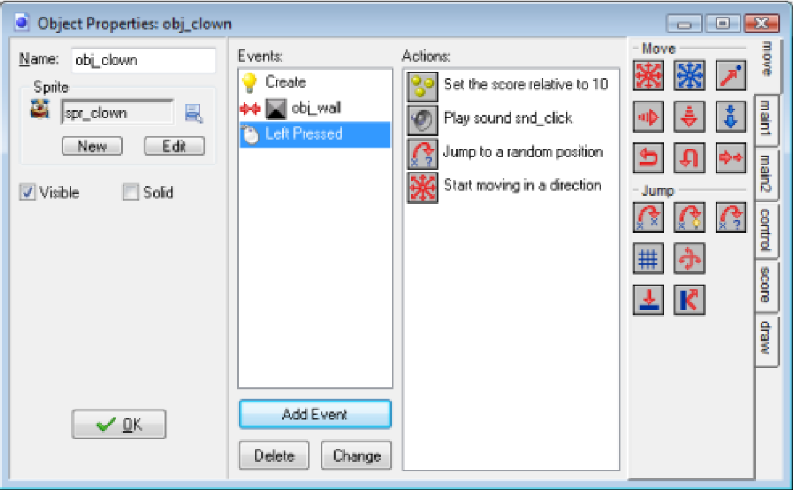

Having created the sprites and sounds does not mean that anything is happening. Sprites are only the images for game objects and we have not yet defined any game objects. Similar, sounds will only play if we tell them to be played. So we need to create our two game objects next.
But before we will do this you will have to understand the basic way in which Game Maker operates. As we have indicated before, in a game we have a number of different game objects. During the running of the game one or more instances of these game objects will be present on the screen or, more general, in the game world. Note that there can be multiple instances of the same game object. So for example, in out Catch the Clown game there will be a large number of instances of wall objects, which surround the playing field. There will be just one instance of the clown object.
Instances of game objects don't do anything unless you tell them how to act. You do this by indicating
how the instances of the object must react to events that happen. There are many different events that
can happen. The first important event is when the instance is created. This is the Create Event. Probably
some action is required here. For example we must tell the instance of the clown object that it should
start moving in a particular direction. Another important event happens when two instances collide with
each other; a so-called Collision Event. For example, when the instance of the clown collides with an
instance of the wall, the clown must react and change its direction of motion. Again other events
happen when the player presses a key on the keyboard or clicks with mouse on an instance. For the
clown we will use a Mouse Event to make it react to a press of the mouse on it.
To indicate what must happen in the case of an event, you specify actions. There are many useful
actions for you to choose from. For example, there in an action that sets the instance in motion in a
particular direction, there is an action to change the score, and there is an action to play sounds. So
defining a game object consists of a few aspects: we give the object a sprite as an image, we can set
some properties, and we can indicate to which events instances of the object must react and what
actions they must perform.
Note the distinction between objects and instances of those objects. An object defines a particular game
object with its behavior (that is, reaction to events). Of this object there can be one or more instances in
the game. These instances will act according to the defined behavior. Stated differently, an object is an
abstract thing. Like in normal life, we can talk about a chair as an abstract object that you can sit on, but
we can also talk about a particular chair, that is an instance of the chair object, which actually exists in
our home.
So how does this work out for the game we are making? We will need two objects. Let us first create the
very simple wall object. This object needs no behavior at all. It will not react to any events.
1. From the Resources menu, choose Create object. The Object Properties form appears, as is shown in image below

2. Click on the Name field and rename the object to obj_wall.
3. Click on the menu icon at the end of the Sprite field and in the list of available sprites select the
spr_wall sprite.
4. Instances of the wall object must be solid, that is, no other instances should be allowed to
penetrate them. To this end click on the box next to the Solid property to enable it.
5. The filled-in form is shown in image below. Press OK to close the form.

For the clown object we start in the same way.
1. From the Resources menu, choose Create object.
2. Click on the Name field and rename the object to obj_clown.
3. Click on the icon at the end of the Sprite field and select the spr_clown sprite.
Note that we do not make the clown object solid. But for the clown there is a lot more that needs to be done. We have to specify its behavior. For this we need the rest of the form. In the middle you see an empty list with three buttons below it. This list will contain the different events that the object must respond to. With the buttons below it you can add events, delete events or change events. There are a large number of different events but you normally need just a few in your game.
Next to the events there is an empty list of actions that must be performed for the selected event (if any). And at the right of this list that are a number of tabbed pages with little icons. These icons represent the different actions. In total there are close to 100 different actions you can choose from. If you hold your mouse above one of the icons a short description of the corresponding action is given. You can drag actions from the tabbed pages at the right to the action list to make them happen when the event occurs
We are first going to define what should happen when an instance of the clown object is created. In this case we want the clown to start moving in an arbitrary direction.
4. Press the Add Event button. The Event Selector, as shown in image below will appear.

5. Click on the Create button. The create event is now added to the list of events. It is
automatically selected (with a blue highlight).
6. Next you need to include a Move Fixed action in the list of actions. To this end, press and hold
the mouse on the action image with the eight red arrows in the page at the right, drag it to the
empty actions list, and release the mouse. An action form is shown asking for information about
the action.
7. In the action form for the Move Fixed action you can indicate in which direction the instance
should start moving. Select all eight directions (not the middle one; which corresponds to no
motion). Note that the selected directions turn red. When multiple directions are selected one is
chosen randomly. Also set the Speed to 4. See image below for the result. Press OK to indicate that
we are ready with this action.

You have now specified behavior that must be executed when an instance of the clown object is created, by adding the event, including an action, and setting the action properties. The object properties form for the clown object should now look as in image below.

The next event we will define is a collision with a wall. Here we will bounce the clown against the wall and we will play the bounce sound effect.
1. Press the Add Event button. In the Event Selector click on the Collision button and select
obj_wall. The collision event is now added to the list of events.
2. Include a Bounce action by dragging it from the page at the right. The action form shown in
image below will appear. There are two properties we can change but their default values are fine.
We are not interested in precise bounces and we want to bounce against solid objects.
(Remember that we made the wall object solid.) Press OK to close the action form.
3. Select the page with the tab main1. From it include the Play Sound action and drag it below the
Bounce action already present. In the action from, click on the icon to the right of the Sound
property and from the list select snd_bounce. Leave the Loop property to false as we want to
play the sound only once. The form should look like in image below. Press OK to close it

That concludes the collision event with the wall object. The object properties form should now look as in image below.

There are two actions that are both performed (in the given order) when the collision occurs. If you for some reason made a mistake, you can right-click with the mouse on an action you added and for example choose Delete to remove the action (or press the <Delete> key on the keyboard). You can also choose Edit Values to change the properties of the action. (Double-clicking on the action will do the same.) And you can drag them up and down to change the order in which they are executed.
Finally we need to define what to do when the user clicks with the left mouse on the clown. We are going to add four actions here: First we will add 10 points to the score. This is easy as Game Maker automatically keeps and displays a score. Next we will play the click sound. After this we will jump the clown to a random position, and we will set a new random direction of motion with a slightly increased speed. The last two actions are added to gradually increase the difficulty of the game.
1. Press the Add Event button. In the Event Selector click on the Mouse button and in the menu
that appears select Left Pressed. This event happens when the user presses the left mouse
button while the mouse cursor is on top of the instance.
2. From the tabbed page labeled score include the Set Score action. As new score indicate a value
of 10. Also click on the box next to the property Relative to enable it. When Relative is enabled
the value is added to the current score. Otherwise the score would be replaced by the value.
The action from should look like in image below

3. From the page main1 include a Sound action. As Sound indicate snd_click. Leave Loop to
false.
4. From the page move include a Jump to Random action. This action places the instance in a
random collision-free position. The parameters can be left unchanged. See image below.

5. Finally we include a Move Fixed action. Again select all eight arrows (and not the center square). As Speed indicate a value of 0.5 and enable the Relative property to add 0.5 to the current speed.
We are now ready with the clown object. We have included actions for the three events that are important. It should now look as in image below. Press the OK button to close the form.
